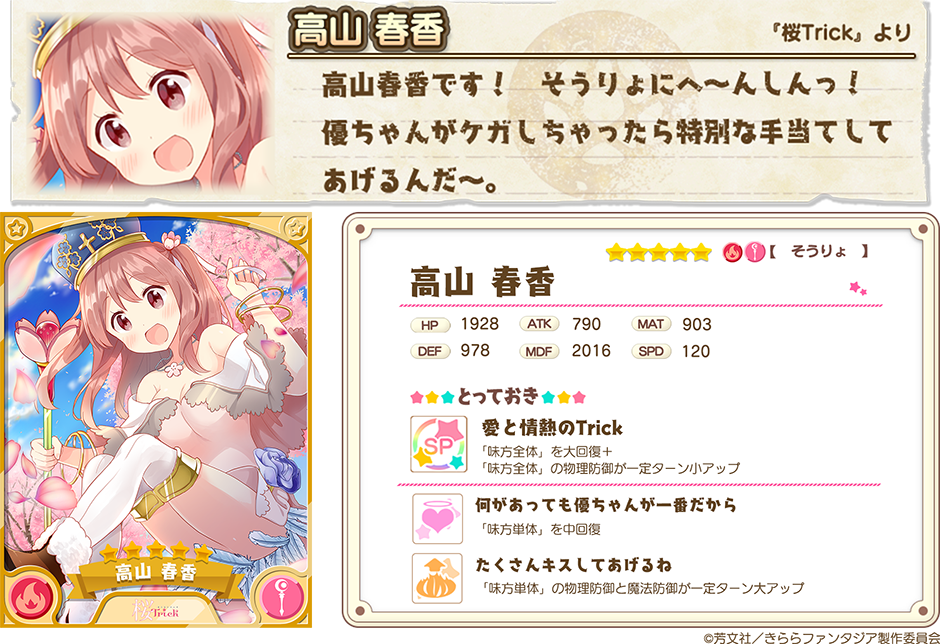
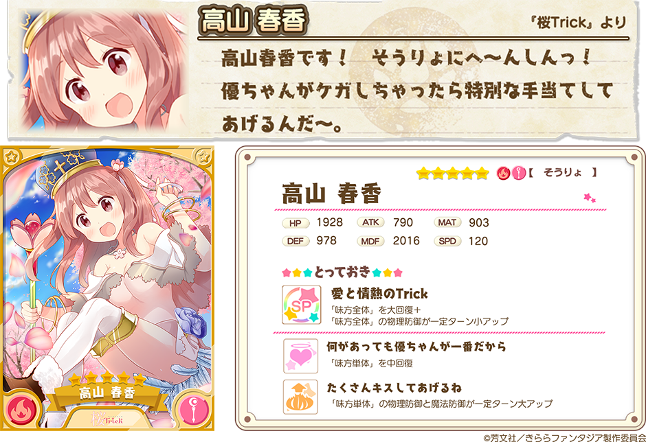

『きららファンタジア』をご利用いただき、誠にありがとうございます。
1月5日16:00より、「炎属性限定キャラクター召喚」を開催いたします。
炎属性限定キャラクター召喚は、炎属性のキャラクターのみが出現する特殊な召喚です。
炎属性は、現在開催中のイベント「きんいろNEW YEAR!」の強敵クエストの【強敵】メカこけし（風属性）にも有効です！
2018年1月5日 16:00 ～ 2018年1月16日 13:59
・10回召喚では★4以上のキャラクターが1体以上確定します。
・初回のみ星彩石300個で10回召喚が可能です。
・本召喚から出現するキャラクターにつきましては、ゲーム内の召喚画面＞出現一覧からご確認下さい。

・提供割合の詳細はゲーム内の召喚画面＞提供割合からご確認ください。
・属性限定キャラクター召喚では、ピックアップ対象キャラクターは存在せず、同一レアリティの他のキャラクターよりも提供割合が高く設定されているキャラクターは存在しません。ご注意下さい。
・キャンペーン内容は予告なく変更になる場合がございます。ご了承ください。
今後とも『きららファンタジア』をよろしくお願いいたします。